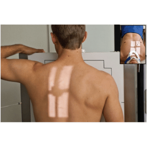
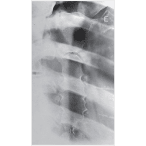
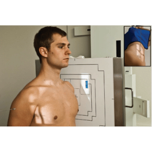
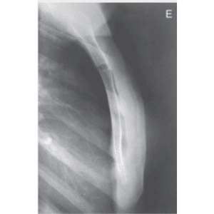

ESTERNO - OBLÍQUA / POSIÇÃO DE NADADOR
Paciente
Em D.V. ou ortostático. Em PA, PMS de 15 a 30º, projeção do esterno sobre a LCE/M braço direito estendido, braço esquerdo elevado sobre a cabeça.
Chassis / Filme
24×30 longitudinal, posicionado em relação a incisura jugular.
Raio central
⊥ na vertical/horizontal, orientado para o centro do osso esterno.
DFF
1,00 m- com bucky.


Observação: Em apnéia expiratória.
ESTERNO - PERFIL
Paciente
Em ortostático; PMS paralelo, projeção do esterno sobre a LCE, braços estendidos e para trás.
Chassis / Filme
24×30 longitudinal, posicionado em relação a incisura jugular.
Raio central
⊥ na horizontal, orientado para a lateral do tórax no centro do osso esterno.
DFF
1,00 m – com bucky.


Observação: Em apnéia após inspiração profunda.